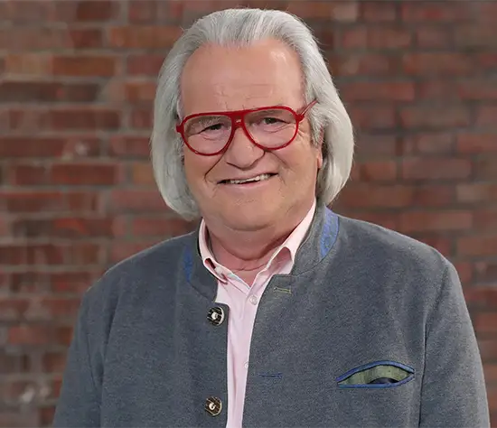
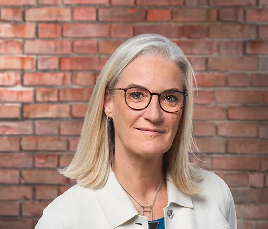

Horst Lichter; 64
führt sein Antiquariat mit gezwirbeltem Schnurrbart, warmem Lächeln und einem untrüglichen Gespür für echte Schätze. Zwischen Silberleuchtern, Porzellan und kuriosen Fundstücken serviert er nicht nur Expertise, sondern gefühlt auch eine Portion Herzlichkeit zu jedem Objekt. Wer nichts kauft, geht trotzdem reicher – mindestens an Geschichten.

Albert Maier; 77
der Jurist aus Ellwangen handelt schon seit 1976 mit Antiquitäten. Maier ist Autodidakt in dem Bereich. Nach 10 Jahren bei „Bares für Rares“ geht Maier in den wohlverdienten Ruhestand.
Sein Lieblingsstück ist das
Diamantkreuz.
Bianca Berding; 50
Dr. Bianca Berding ist ebenfalls seit 2019 als Expertin bei „Bares für Rares“. Sie hat einen Doktortel als Kunsthistorikerin und war auf den Kölner Kunstmessen „Art Cologne“ und „Cologne Fine Art & Design“ als Führerin und Beraterin für Kunstsammler tätig.
Colmar Schulte Goltz; 53
Colmar Schulte Goltz ist Experte für Malerei und internationales Kunsthandwerk. Er kommt aus Essen und hat Kunstgeschichte, klassische Archäologie und Geschichte studiert. Seit 25 Jahren arbeitet Schulte-Goltz im internationalen Kunsthandel, war für Museen und Galerien tätig. Zwei Galerien in Essen gehören ihm selbst.
Detlev Kümmel; 58
mag Antiquitäten und Kampfsport. Er betrieb Kampfsport, hatte Fitnessstudios und eröffnete vor zwanzig Jahren eine Kunstgalerie.

Dr. Heide Rezepa-Zabel; 60
Die Berlinerin ist Kunsthistorikerin und hat in Hamburg und Berlin studiert. Sie leitet eine Handelsplattform und arbeitet als wissenschaftliche Mitarbeiterin im „Museum der Dinge“ in Berlin.

Friederike Werner; 64
Friederike Werner ist Expertin für Gegenstände der Kunst und des Kunsthandwerks und seit 2019 bei Bares für Rares. Sie studierte Kunstgeschichte, Ägyptologie und Klassische Archäologie und arbeitet wissenschaftlich in ihren Fächern.
Wendela Horz; 56
Wendela Horz ist gelernte Goldschmiedin und Spezialistin für Uhren und kostbare Steine. Sie ist Fachmitglied der „Deutschen Gemmologischen Gesellschaft“ mit mehr als 28 Jahren Berufserfahrung als Juwelierin.